Conoce el formato
Descubre las galas, los retos musicales y los criterios artísticos de Ecos de Voces Virtual 2027.
Llega Ecos de Voces Virtual 2027: talento emergente, retos musicales y una comunidad que crece gala a gala.
Descubre a las voces de esta edición, sigue su evolución y acompáñalas en un viaje donde cada actuación cuenta algo más que una canción.
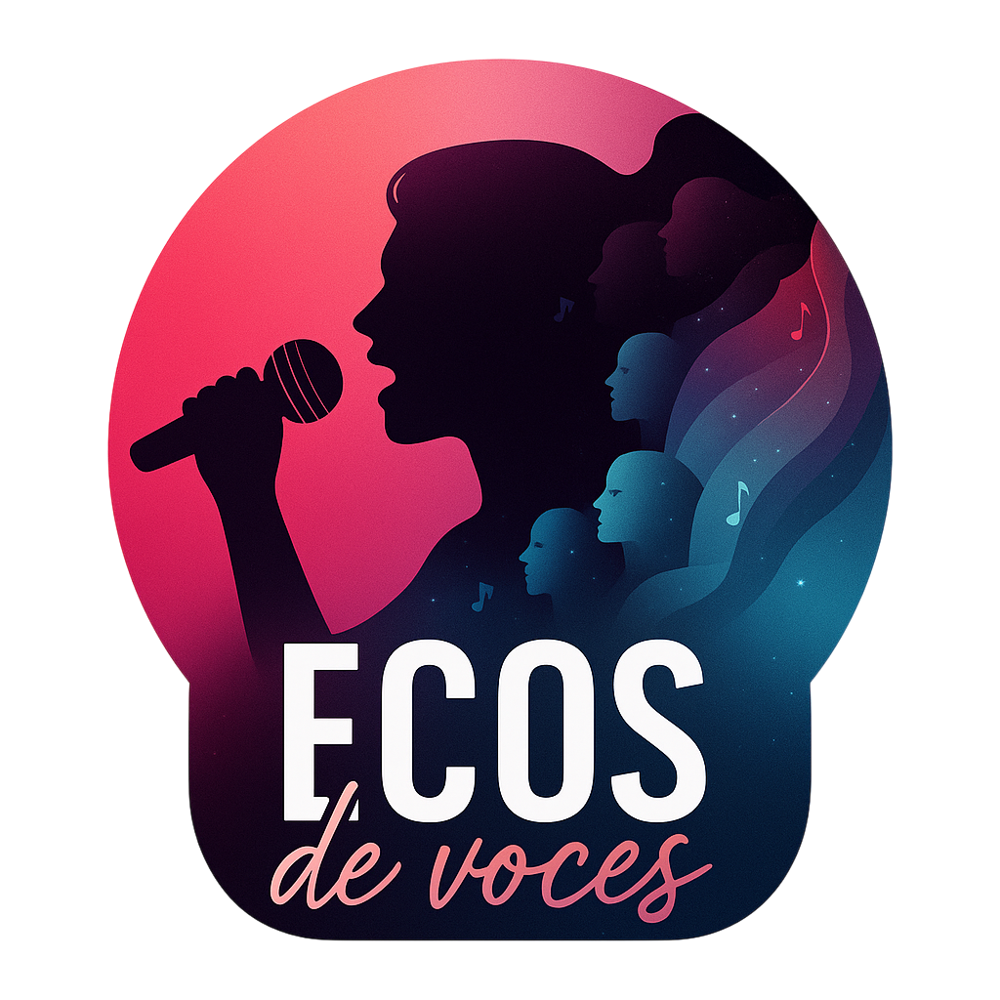
La competición nos impulsa; el crecimiento artístico y humano es el verdadero objetivo. Descubre las galas, el equipo y la comunidad de una edición centrada en el talento emergente.
Descubre las galas, los retos musicales y los criterios artísticos de Ecos de Voces Virtual 2027.
Descubre los 18 perfiles cuando se anuncien oficialmente y sigue su evolución.
Desde la Gala 0 del 13 de junio hasta la gran final online del 29 de agosto.
Ya estamos preparando el camino para conocer a los 18 concursantes de esta edición. Hasta su presentación oficial, sus identidades permanecerán en secreto. ¿Quiénes estarán detrás de cada voz?
Identidad reservada
Se revelará próximamente
Identidad reservada
Se revelará próximamente
Identidad reservada
Se revelará próximamente
Identidad reservada
Se revelará próximamente
Identidad reservada
Se revelará próximamente
Identidad reservada
Se revelará próximamente
Identidad reservada
Se revelará próximamente
Identidad reservada
Se revelará próximamente
Identidad reservada
Se revelará próximamente
Identidad reservada
Se revelará próximamente
Identidad reservada
Se revelará próximamente
Identidad reservada
Se revelará próximamente
Identidad reservada
Se revelará próximamente
Identidad reservada
Se revelará próximamente
Identidad reservada
Se revelará próximamente
Identidad reservada
Se revelará próximamente
Identidad reservada
Se revelará próximamente
Identidad reservada
Se revelará próximamente
Estas siluetas representan las 18 plazas previstas para la edición. No son fotografías ni perfiles de participantes reales. Las iremos sustituyendo por sus imágenes y biografías cuando se anuncien oficialmente.
Pulsa cualquier silueta de la sección de concursantes para abrir su ficha. En ella se reunirán su biografía, sus actuaciones, su posición semanal y la evolución a lo largo del concurso.
Presentación, procedencia, estilos musicales, referentes, objetivos y curiosidades compartidas por cada participante.
Historial por gala, puntos obtenidos, puesto semanal y evolución de la clasificación general. Los datos se publicarán cuando estén validados.
Un espacio público para consultar las valoraciones oficiales de cada gala, los rankings de jueces y la suma de puntos. No se muestran notas ficticias ni resultados provisionales como si fueran oficiales.
Cada semana se anunciará quién obtiene el privilegio público de favorito/a y qué ventaja, reconocimiento o experiencia recibe, con sus condiciones.
La persona que consiga el reconocimiento según las reglas oficiales de la edición aparecerá aquí con su nombre artístico, la gala correspondiente y el motivo de la distinción.
Aún sin anunciarEl detalle del privilegio se publicará junto al resultado para que todo el público conozca qué se concede, durante cuánto tiempo y bajo qué condiciones.
Pendiente de la primera gala| Gala | Favorito/a | Privilegio concedido | Estado |
|---|
No hay favoritos/as ni privilegios publicados todavía. Esta tabla se actualizará después de cada gala y únicamente con información confirmada por la organización.
Ecos de Voces combina retos musicales, interpretación, creación audiovisual y acompañamiento artístico. La competición nos impulsa; el crecimiento es lo que nos mueve.
Conoce a cada participante, su estilo, sus referentes y la historia que hay detrás de su música.
Actuaciones individuales, dúos y desafíos temáticos pondrán a prueba la creatividad y la versatilidad artística.
Sigue las galas, apoya a tus favoritos y descubre cómo cada artista crece con la experiencia.
La edición avanza a través de distintas etapas. Aquí podrás consultar las próximas galas, los retos musicales y los resultados oficiales cuando se anuncien.
Una actuación individual y una actuación en dúo para presentar las voces, empezar a conocerse y abrir el camino de la edición.
13 de junio de 2027Nuevos temas, retos y actuaciones que muestran distintas facetas de cada artista.
El formato combina la valoración artística con mecanismos de permanencia y participación.
Las voces que lleguen a esta fase competirán por las plazas de la gran final.
Una última celebración de la música, el recorrido y el talento de las personas finalistas.
Las galas semanales están previstas para los domingos. Los hitos de esta tabla siguen el cronograma oficial de EDV2027.
La evaluación contempla cuatro dimensiones: técnica vocal, interpretación vocal, interpretación visual y calidad de realización del vídeo. Se valora la actuación y el cuidado de la propuesta, no el presupuesto ni disponer de equipo profesional.
Afinación, respiración, control del aire, colocación, proyección y seguridad técnica al interpretar la canción.
Expresividad, intención, musicalidad y capacidad para transmitir la emoción y el sentido de la canción a través de la voz.
Presencia, lenguaje corporal, conexión con la cámara y coherencia entre la interpretación y la propuesta artística.
Claridad de imagen y sonido, encuadre, iluminación, edición y cumplimiento de las instrucciones. No se exige equipo profesional ni se premia el gasto: se valora el cuidado y la adecuación del vídeo.
Cuando se abran las votaciones oficiales, encontrarás aquí la información para participar con seguridad y saber qué papel tiene el voto del público.
Cuando se publiquen las nominaciones, aparecerá aquí el listado oficial. El botón de cada persona llevará al formulario de Google de la salvación. El formulario todavía no está creado, por eso los botones muestran un aviso de prueba. La votación será de un voto por persona; la candidatura con más votos del público obtendrá el punto de salvación del público.
🛠️ Formulario de Google pendienteAyuda a que nuevas voces lleguen a más personas. Comparte las publicaciones oficiales y anima a la comunidad a descubrir cada actuación.
Ver canales oficiales ↓Ejemplo de cómo se mostrará el botón cuando haya nominados. No se está realizando ninguna votación real. El sistema contempla 5 puntos en total: 4 asignados por el jurado y 1 correspondiente al voto del público.
Tarjeta de prueba para comprobar el funcionamiento del botón de salvación.
Tarjeta de prueba para comprobar el funcionamiento del botón de salvación.
Las normas de votación, los periodos de participación y el método de cómputo se publicarán antes de que se abra cada votación. No hay votaciones activas en esta vista previa.
No se trata solo de llegar a la final.
Se trata de descubrir hasta dónde puedes llegar.
Conoce a las personas que hacen posible Ecos de Voces: dirección, casting, formación audiovisual y acompañamiento artístico. Cada perfil aporta una mirada distinta al desarrollo de las voces participantes.
El equipo combina organización, criterio artístico y aprendizaje práctico. Su labor no se limita a evaluar: también busca orientar, acompañar y ayudar a que cada participante crezca a lo largo de la edición.
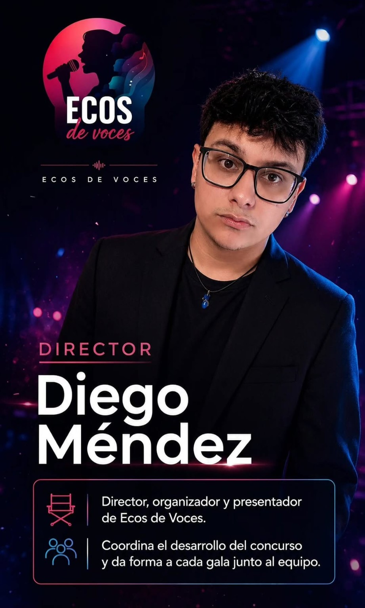
Coordina el desarrollo general de Ecos de Voces, organiza el trabajo del equipo y da forma a cada gala junto a las personas colaboradoras. También conduce el proyecto y cuida que la experiencia mantenga su identidad artística y humana.
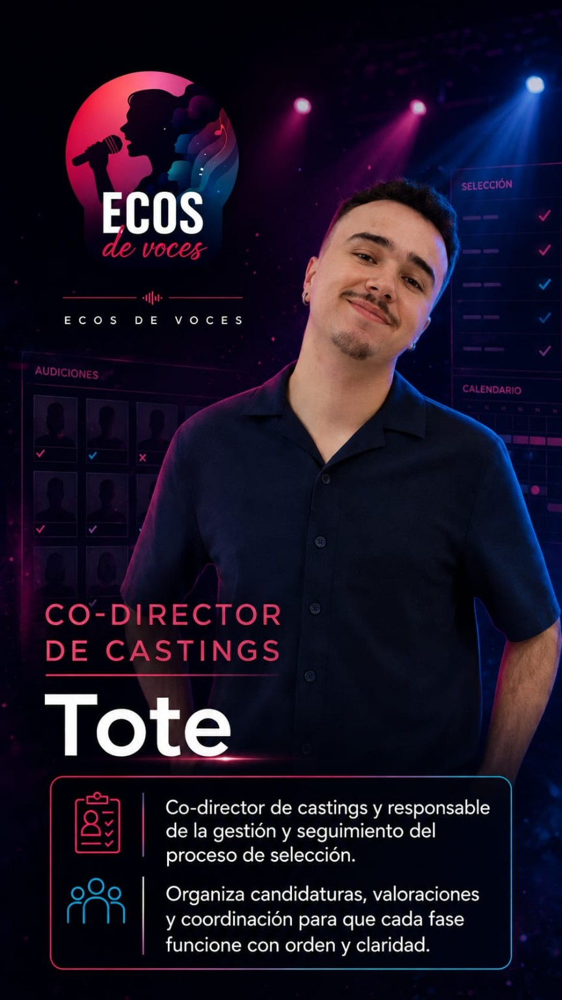
Responsable de la gestión y el seguimiento del proceso de selección. Organiza las candidaturas, coordina las valoraciones y ayuda a que cada fase del casting se desarrolle con orden, claridad y criterios compartidos.
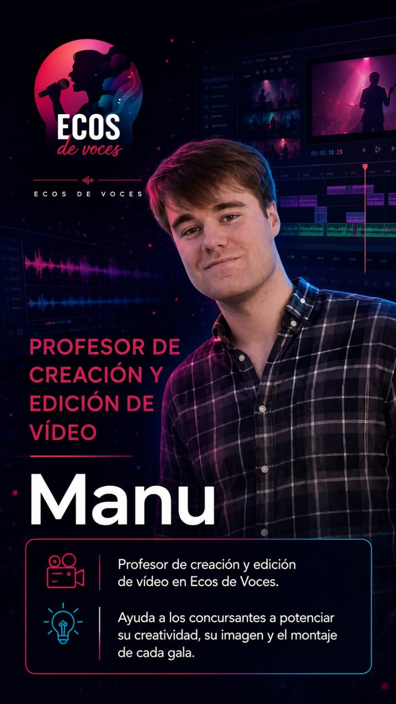
Acompaña a las personas participantes en la creación audiovisual de sus actuaciones. Trabaja la creatividad, la imagen, el encuadre y el montaje para que cada vídeo comunique mejor la propuesta artística.
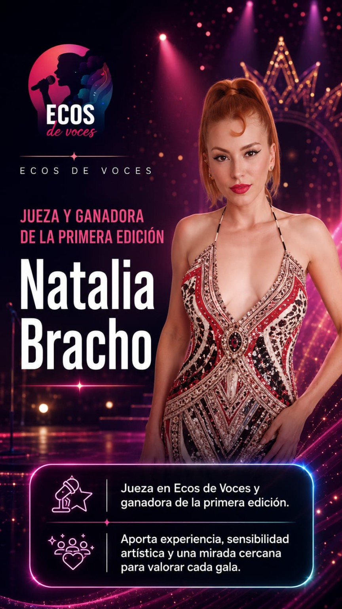
Aporta experiencia escénica, sensibilidad artística y una mirada cercana. Su valoración tiene en cuenta la evolución de cada participante, la autenticidad interpretativa y la capacidad de conectar con el público.
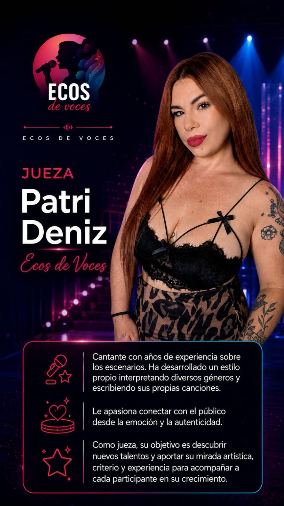
Cantante e intérprete con experiencia sobre los escenarios y en la creación de canciones. Valora la autenticidad, la expresión artística y la capacidad de transmitir emociones desde una identidad propia.
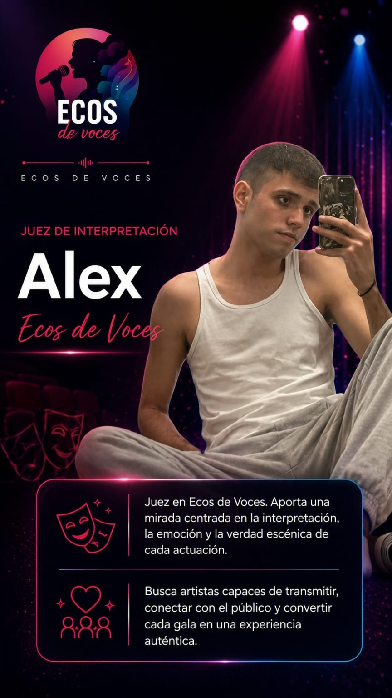
Aporta una mirada centrada en la emoción, la intención y la verdad escénica. Observa cómo cada participante construye su interpretación y consigue conectar con el público más allá de la ejecución técnica.
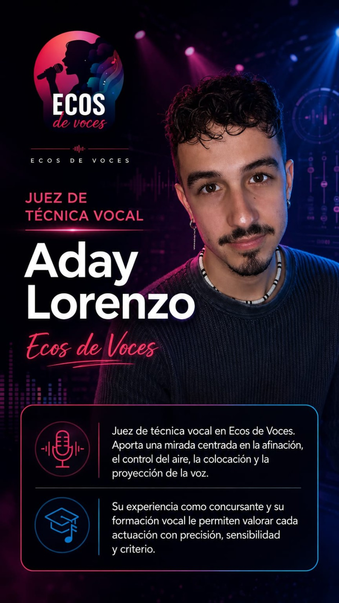
Valora aspectos como la afinación, el control del aire, la colocación y la proyección de la voz. Su mirada técnica ayuda a reconocer fortalezas vocales y aspectos concretos que pueden seguir desarrollándose.
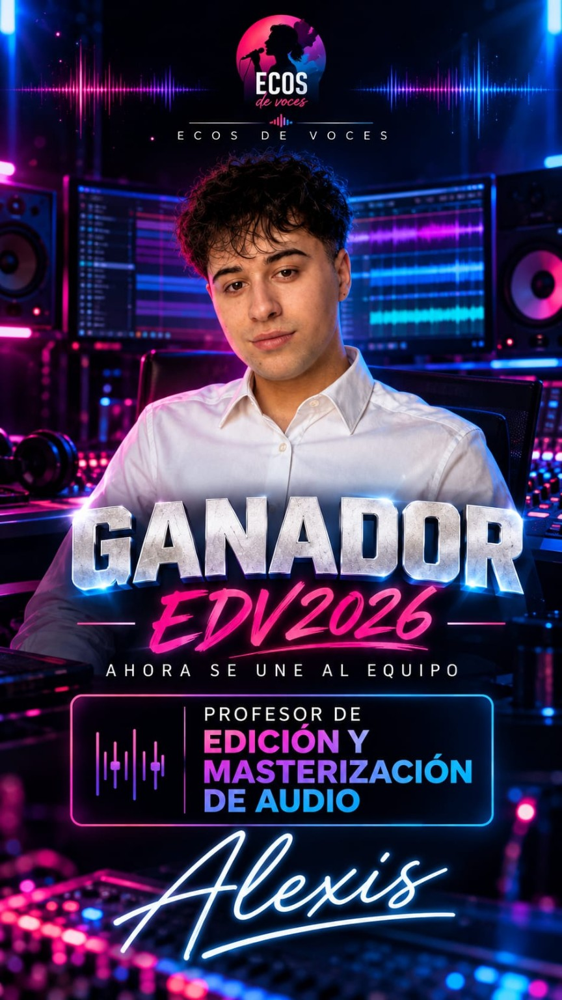
Acompaña la preparación técnica del sonido de las actuaciones, trabajando la edición y la masterización para conseguir un resultado claro y equilibrado. El tratamiento de audio debe respetar la voz original y no utilizar efectos que modifiquen la interpretación vocal.
Las fichas son de presentación y no incluyen puntuaciones ni valoraciones personales.
Una guía rápida para seguir la edición desde el otro lado de la pantalla.
Los perfiles se publicarán cuando la selección oficial esté cerrada y las personas participantes hayan confirmado su incorporación.
Las galas se anunciarán en los canales oficiales de Ecos de Voces. Esta web reunirá la información principal y enlazará las publicaciones cuando estén disponibles.
Las votaciones solo estarán disponibles durante los periodos anunciados. Antes de cada una se explicará dónde votar, cuándo cierra y cómo se tendrá en cuenta el resultado.
El concurso combina valoraciones del jurado con mecanismos de nominación, salvación y participación del público en las fases previstas. El reglamento oficial explicará el detalle de cada etapa.
Esta edición está planteada como una experiencia virtual, con actuaciones audiovisuales y actividades coordinadas online.
Puedes seguir las novedades en Instagram y TikTok a través de los enlaces oficiales al final de esta página.
Celebramos a las personas que han dejado huella en ediciones anteriores. El resultado importa, pero también el recorrido, el aprendizaje y la comunidad que se crea alrededor de la música.
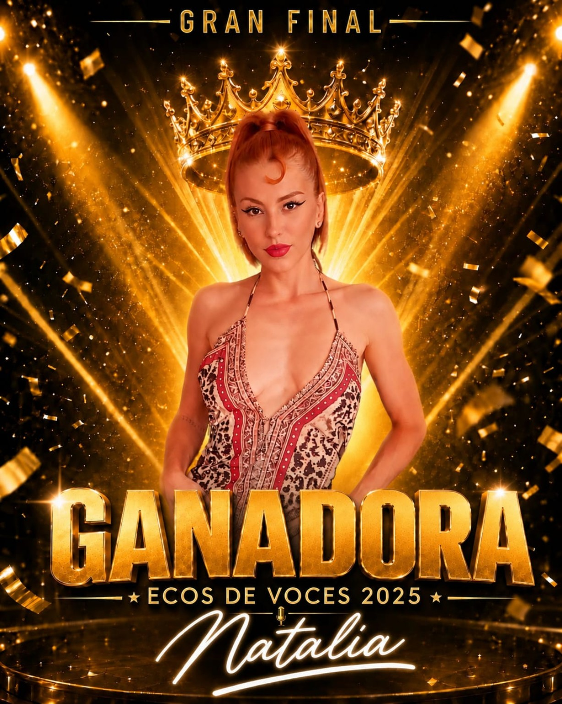
Primer puesto · Ecos de Voces 2025
Segundo puesto · Ecos de Voces 2025
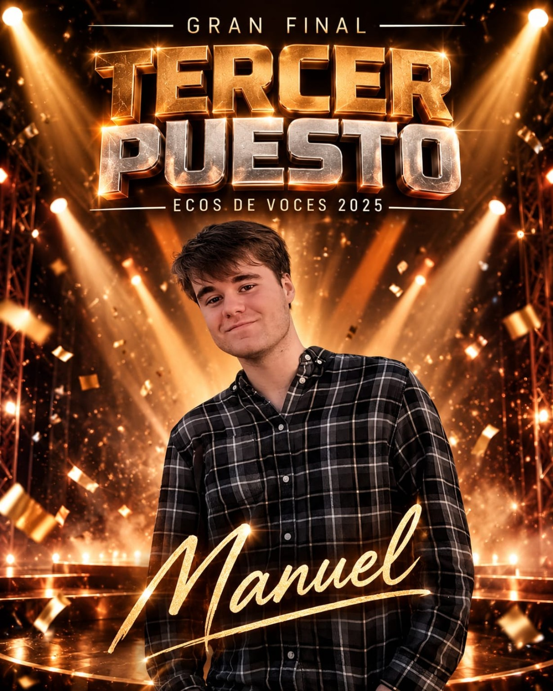
Tercer puesto · Ecos de Voces 2025
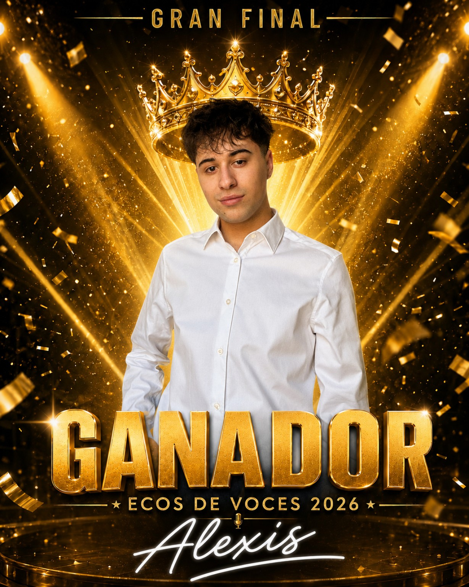
Primer puesto · Ecos de Voces 2026
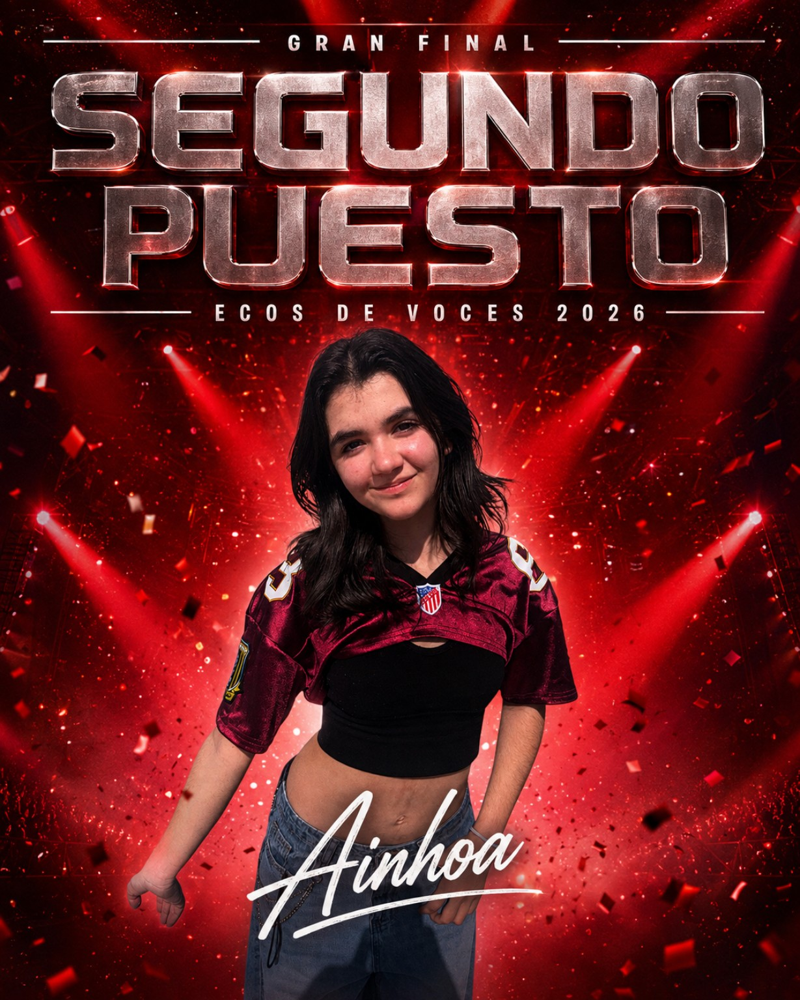
Segundo puesto · Ecos de Voces 2026
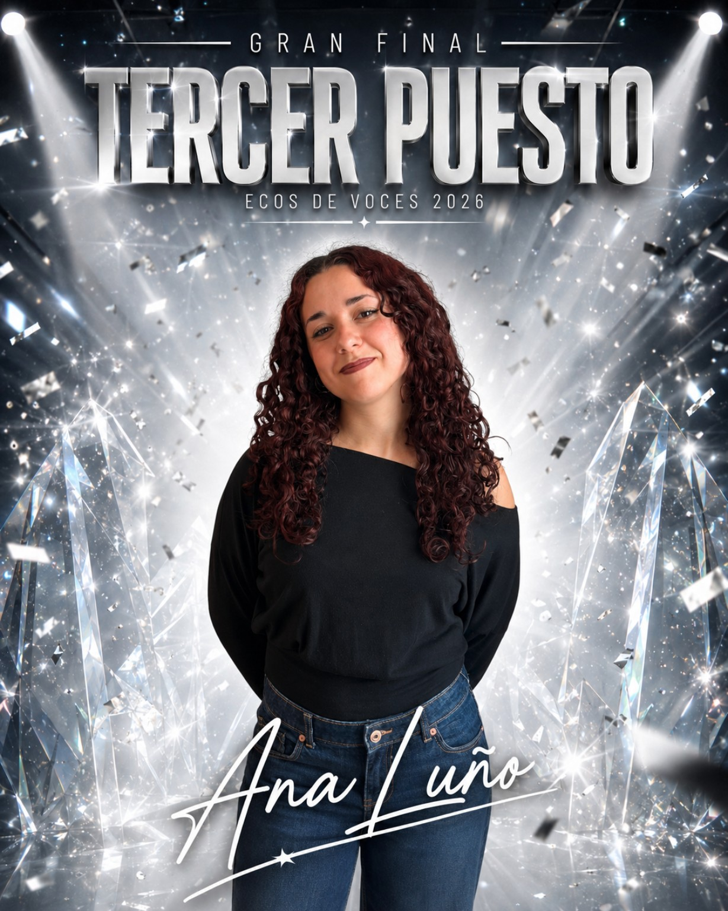
Tercer puesto · Ecos de Voces 2026
Pronto presentaremos a los artistas, las primeras actuaciones y las fechas clave de Ecos de Voces Virtual 2027. Síguenos para no perderte el comienzo.
Instagram oficial ↗TikTok oficial ↗Volver arriba ↑